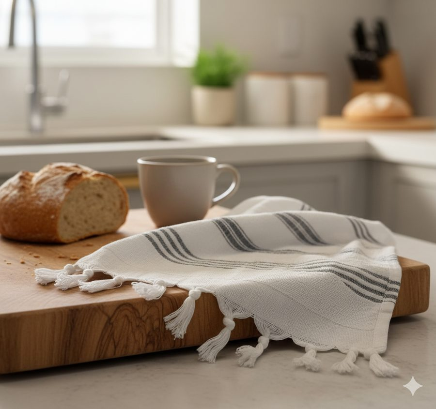

Na Tramatto, chamamos esse item de pano de louça — o mesmo pano de prato do dia a dia, só que com outro nome. Ao longo deste guia usamos os dois termos como sinônimos.
A temperatura certa muda tudo
O algodão — especialmente o de fibra longa egípcia — é naturalmente resistente, mas a temperatura de lavagem é o fator que mais afeta a durabilidade. Acima de 60°C, as fibras começam a contrair de forma permanente, o tecido perde maciez e os padrões coloridos desbotam de forma irreversível.
A regra simples: até 40°C para uso cotidiano, até 30°C para panos com padrões coloridos ou bordas jacquard. Nunca acima de 60°C para nenhum pano de qualidade. Para referência, a mão humana tolera água a cerca de 43°C — se a água queimar levemente ao toque, já está quente demais para o seu pano.
A confusão acontece porque muita gente associa temperatura alta a limpeza mais profunda. De fato, para higienização de roupas brancas de algodão grosseiro ou roupas de cama com vírus e bactérias, temperaturas acima de 60°C podem ser recomendadas. Mas panos de cozinha de uso diário não precisam de esterilização — precisam de remoção de gordura, suor e sujeira leve, o que acontece perfeitamente a 40°C com um bom detergente.
Se sua máquina tem ciclo "algodão" ou "têxteis delicados": use o de têxteis delicados a 40°C. Se tem só temperatura, escolha 30–40°C e ciclo normal. Nunca use "pré-lavagem a quente" em panos de algodão egípcio.
Máquina de lavar ou à mão?
Ambas funcionam — com ressalvas. Na máquina de lavar, o atrito mecânico em ciclos agressivos desgasta as fibras ao longo do tempo. À mão, o risco é a temperatura da água não controlada e o hábito de esfregar com força para tirar manchas.
Na máquina: configurações ideais
- Ciclo: delicado, algodão ou têxteis — nunca "intensivo" ou "pré-lavagem"
- Temperatura: 30–40°C
- Centrifugação: máximo 800 rpm — velocidade maior deforma as bordas e distorce os padrões
- Quantidade: não sobrecarregue — panos precisam de espaço para circular e enxaguar
- Separação: separe panos brancos dos coloridos nas primeiras 5 lavagens para evitar sangramento de cor
Um ponto frequentemente ignorado: o detergente em excesso é tão prejudicial quanto o amaciante. Use a dosagem recomendada para carga pequena e prefira fórmulas sem alvejante ótico (brighteners), que constroem depósitos invisíveis nas fibras ao longo do tempo.
À mão: técnica sem danos
- Água morna (não quente ao toque — 30–40°C)
- Sabão neutro ou detergente líquido para roupas finas
- Movimentos suaves de afundar e espremer — nunca torcer ou esfregar com força
- Enxágue completo em água corrente — resíduo de sabão deixa o pano rígido após secar
A lavagem à mão é especialmente indicada para tratamento pontual de manchas antes de colocar o pano na máquina. Para o pré-tratamento, aplique sabão neutro na mancha, deixe agir por 5–10 minutos e enxágue antes de incluir no ciclo normal.
O mito do amaciante (não use)
O amaciante é o inimigo silencioso do algodão de qualidade. O mecanismo é contraintuitivo: o amaciante deposita uma camada de silicone e compostos catiônicos na fibra, que inicialmente deixa o pano mais macio ao toque — mas progressivamente reduz a capacidade de absorção do tecido.
Panos de algodão egípcio de fibra longa ficam naturalmente mais macios a cada lavagem sem qualquer produto. A estrutura da fibra longa (38mm) se organiza com o uso e o calor leve da secagem. Usar amaciante é literalmente pagar para ter um resultado pior — você compromete o que é mais valioso no pano (a absorção) em troca de uma maciez que ele já teria por conta própria.
O mesmo vale para folhas de secadora com fragrância — elas funcionam pelo mesmo princípio do amaciante líquido, deixando uma camada graxosa que acumula com o uso.
Panos de prato não precisam de amaciante. Eles precisam de água, sabão e tempo. O algodão egípcio faz o resto sozinho.
Como secar para preservar cor e textura
A secagem é responsável por cerca de 30% do desgaste total de um pano de prato ao longo da vida útil. As principais decisões:
- À sombra, sempre. A exposição direta ao sol desbota padrões — especialmente tons terrosos, naturais e jacquard colorido. A luz UV degrada os corantes têxteis de forma permanente e progressiva.
- Aberto, não dobrado. Pendurar o pano dobrado ao meio cria zonas de umidade concentrada que formam manchas amareladas ao secar. Estique completamente na varal.
- Máquina de secar: temperatura baixa. Se usar, selecione temperatura baixa ou "delicado" e retire o pano ainda ligeiramente úmido para evitar amassados permanentes e o amarelamento nas bordas costuradas.
Sobre o engomamento: panos de algodão egípcio não precisam de amido ou engomamento. O acabamento natural das fibras longas mantém o caimento e a aparência mesmo após múltiplas lavagens. Se quiser uma textura mais firme para uso específico, uma passagem rápida de ferro a temperatura média (sem vapor sobre padrão jacquard) é suficiente.

Cuidados especiais para panos com padrão jacquard
O padrão jacquard é tecido diretamente na estrutura do fio — o que o torna muito mais durável que panos estampados, onde o desenho é apenas uma camada sobre a superfície. Mas há cuidados específicos para manter a riqueza visual do padrão ao longo dos anos:
- Nunca use alvejante (água sanitária ou cloro). Mesmo diluído, o cloro destrói as fibras de cor do jacquard de forma irreversível. Para branquear panos brancos jacquard, use água oxigenada 10V diluída em água fria (1 parte para 4 de água) ou limão ao sol.
- Vire o pano do avesso nas primeiras 5 lavagens. Reduz o contato do padrão com o atrito mecânico da máquina durante o período de "assentamento" do fio novo.
- Não use esponjas abrasivas ou palha de aço. Para manchas em panos jacquard, trate com sabão neutro e água morna antes da lavagem — sem esfregar diretamente sobre o relevo do padrão.
- Ferro: use pano úmido de proteção. Se passar ferro em pano jacquard, coloque um pano úmido fino entre o ferro e o tecido para proteger o relevo tridimensional do padrão.
Sinais de que o pano precisa ser trocado
Um pano de prato de algodão egípcio bem cuidado dura facilmente 3 a 5 anos de uso diário. Isso considerando lavagens frequentes (a cada 1–2 dias) e os cuidados descritos neste guia. Os panos de hotéis europeus de 5 estrelas, que usam o mesmo padrão de matéria-prima, são trocados em média a cada 18–24 meses de uso intensivo comercial.
Os sinais claros de que chegou a hora de renovar:
- Fiapos em excesso que não somem após as primeiras lavagens (sinal de fibra curta se desfazendo)
- Odor que persiste mesmo após lavagem completa com temperatura correta
- Bordas com fio soltando ou desfazendo nas costuras
- Textura permanentemente áspera ao toque — sinal de fibra degradada ou dano por temperatura
- Cor cinza opaca que não era a original do pano
- Absorção claramente reduzida — o pano "repele" a água em vez de absorver
Panos de algodão egípcio ficam mais macios com o uso — não mais ásperos. Se o seu pano está ficando mais áspero a cada lavagem, o problema é temperatura muito alta, excesso de detergente não enxaguado, ou uso de amaciante que acumulou resíduo.
Perguntas frequentes
Panos feitos para
durar décadas.
Algodão egípcio de fibra longa, tear jacquard artesanal e acabamento à mão — os panos Tramatto são projetados para melhorar com o uso, não o contrário.
Ver coleção completa